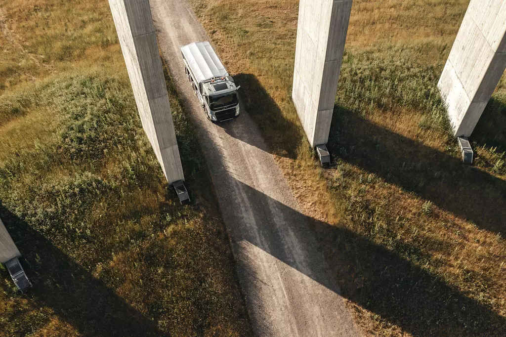

The Volvo FMX: Engineered to be our most resilient construction specialist for the most demanding environments.
Meet the Volvo FMX: our most resilient truck, designed to master the toughest construction projects.
Offering a choice between electric and diesel power, it combines high-load axles with superior ground clearance and a driven front wheels for maximum traction.
From highways to treacherous off-road paths, the FMX is built to go exactly where the job takes you—regardless of the conditions.
Volvo FMX
Applications: building and construction transport, mining and quarry transport, public service and utility transport
Power: 330-540 hp
Price: From 140.000 €
Availability: Asia/Pacific, Europe, Middle East, Africa and Latin America

Built for real construction work
Adapt your Volvo FMX to your specific operational needs for seamless performance.
The reinforced rigid chassis is designed to enhance vehicle uptime and overall productivity in both on-road and off-road environments.
Detailed insights into our versatile chassis options are available in the image gallery featured below.




Driven front axle
Turn every terrain into a predictable path with the Volvo FMX's driven front axle.
At its heart lies the Automatic Traction Control—a silent digital guardian that breathes life into your front wheels the millisecond you lose grip.
It's power on demand, retreating into the background the moment the road clears to preserve your efficiency. It's brute force, refined by intelligence.
300 mm ground clearance
Rise above the chaos with the Volvo FMX's dedicated rear air suspension.
Engineered for the brutal reality of the construction site, it creates a 300 mm shield of ground clearance between you and the rubble.
It's where unbeatable traction meets a ride so smooth, you'll forget the road ever ended. 300 mm of pure engineering confidence.
38-tonne bogie
Meet the iron backbone of your construction business.
Capable of carrying up to 38 tonnes without breaking a sweat, our reinforced bogie is the definitive answer to your toughest productivity challenges.
When perfectly paired with the Volvo FMX, it delivers the raw strength and unyielding durability you need to dominate the job site. Heavy-duty has a new benchmark.